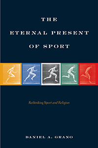

<body bgcolor="#FFFFFF" text="#000000" link="#0000FF" vlink="#CC0000" alink="#CC0000"><center><hr width="350" size="1" align="center" noshade>Rethinking the changes surrounding religion and elite sport cultures<hr width="350" size="1" align="center" noshade><p><a href="https://cdcshoppingcart.uchicago.edu/Cart/ChicagoBook.aspx?ISBN=&&PRESS=temple" target="_top">Buy this book!</a> | <a href="https://cdcshoppingcart.uchicago.edu/Cart/Cart.aspx?PRESS=temple" target="_top">View Cart</a> | <a href="https://cdcshoppingcart.uchicago.edu/Cart/Cart.aspx?PRESS=temple" target="_top">Check Out</a></p><p></p></center><!--none//--><h1 class = "booktitle">The Eternal Present of Sport</h1> <h1 class = "subtitle">Rethinking Sport and Religion</h1>
<h3>Daniel A. Grano </h3>
paper: $34.95, Jun 17<BR>EAN:&nbsp;978-1-4399-1280-5<BR><font color=#990033>Not Yet Published Preorder</FONT><font size=-7><br>&nbsp;</font></p><p class="info">cloth: $104.50, <BR>EAN:&nbsp;978-1-4399-1279-9<BR><font color=#990033>Not Yet Published Preorder</FONT><font size=-7><br>&nbsp;</font></p><p class="info">e-book: $34.95, <BR>EAN:&nbsp;978-1-4399-1281-2<BR><font color=#990033>Not Yet Published Preorder</FONT><font size=-7><br>&nbsp;</font></p></p></td></tr></table>
<BR> <p class="info">288 pp<BR> 6 x 9<BR> <p class="info"><font size=-7>&nbsp;</font></p><p class="info">
</P><BLOCKQUOTE><p>
<i>"Daniel Grano has achieved an unusual and valuable integration of several important social and academic subjects. With his focal concept of transcendence, he merges a diverse range of issues. Blending ways of studying sport, religion, and society,</i> The Eternal Present of Sport <i>presents a novel perspective. For scholars and general readers alike, this book will open new ways of thinking about popular culture, religion, and sport.</i>"
<br />-<b>Barry Brummett</b>,&nbsp;Charles Sapp Centennial Professor in Communication and Chair of the&nbsp;Department of Communication Studies at the University of Texas at Austin
<br></BLOCKQUOTE>
<p>
In his persuasive study <i>The Eternal Present of Sport, </i>Daniel Grano rethinks the sport-religion relationship by positioning sport as a source of theological trouble. Focusing on bodies, time, movement, and memory, he<i> </i>demonstrates how negative theology can be practically and theoretically useful as a critique of elite televised sport.<i><br>
<p></i>Grano asserts that it is precisely through sport's highest religious ideals that controversies are taking shape and constituting points of political and social rupture. He examines issues of transcendence, "legacy"-e.g., "greatest ever," or "all-time"-and "witnessing" through instant replay, which undermine institutional authority. Grano also reflects on elite athletes representing especially powerful embodiments of religious and social conflict, including around issues related to gender, sexuality, ability doping, traumatic brain injury, and institutional greed. <br>
<p>Elite sport is in a period of profound crisis. It is through the ideals Grano analyzes that we can imagine a radically alternative future for elite sport.
<br>
<P CLASS="top"><A HREF="#top">BACK TO TOP</A></P>&nbsp;
<BR>&nbsp;
<h2 class="inpageheading"><A NAME="reviews"></a>Reviews</h2>
<p>
"The Eternal Present of Sport <i>is quite unlike any other sport studies book. Grano utilizes an understated but effective interdisciplinary approach in unpacking the empirical complexities of sport culture-from the embodied to the digital, the commercial to the technological, the legal to the philosophical.&nbsp;His grasp of sport and cultural studies literatures is truly comprehensive, and his application of the scholarship in examining the sport-religion nexus is both innovative and insightful.</i> The Eternal Present of Sport <i>delivers the comprehensive radical contextualization of the sport-religion dialectic that others have merely purported to provide. With its wide-ranging and illuminating critical analysis of both sport and religion,&nbsp;this book will have an immediate and significant impact on numerous literatures.</i>"
<br />-<b>David L. Andrews</b>, Professor of Physical Cultural Studies in the Department of Kinesiology at the University of Maryland
<br>
<P CLASS="top"><A HREF="#top">BACK TO TOP</A></P>&nbsp;<P>
</P><BR>&nbsp;
<H2 class="inpageheading"><A NAME="author bio"></a>About the Author(s)</H2><p>
<b>Daniel A. Grano</b> is Associate Professor in the Department of Communication Studies at The University of North Carolina at Charlotte.
<br>
<P CLASS="top"><A HREF="#top">BACK TO TOP</A></P>
<p><h2 class="inpageheading"><a name="subjects"></a>Subject Categories</h2> <p><a href="http://www.temple.edu/tempress/sports.html" target="_top">Sports</a> <br><a href="http://www.temple.edu/tempress/religion.html" target="_top">Religion</a> <br><a href="http://www.temple.edu/tempress/cultural.html" target="_top">Cultural Studies</a> <br><a href="http://www.temple.edu/tempress/mass_media.html" target="_top">Mass Media and Communications</a> <br><a href="" target="_top"></a> </p>
</p>
<P>
</P>
<p align="center"><a href="https://cdcshoppingcart.uchicago.edu/Cart/ChicagoBook.aspx?ISBN=&&PRESS=temple" target="_top">Buy this book!</a> | <a href="https://cdcshoppingcart.uchicago.edu/Cart/Cart.aspx?PRESS=temple" target="_top">View Cart</a> | <a href="https://cdcshoppingcart.uchicago.edu/Cart/Cart.aspx?PRESS=temple" target="_top">Check Out</a></p><p><font face="Arial" size="1"><a href="copyright.html" onMouseOver="window.status='Web Copyright Policy';return true;" onMouseOut="window.status=''" title="Web Copyright Policy">&copy;</a> 2017 <a href="http://www.temple.edu" target="new" onMouseOver="window.status='Link to Temple University home page';return true;" onMouseOut="window.status=''" title="Link to Temple University home page">Temple University</a>. All Rights Reserved. http://www.temple.edu/tempress/titles/2374_reg.html</font></p>